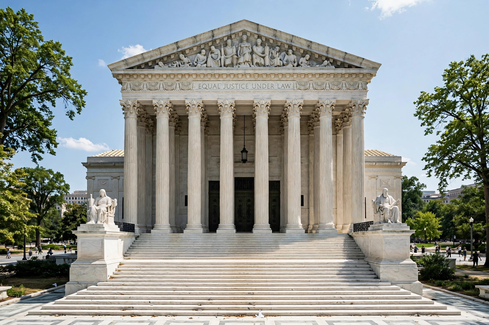

United States v. Nixon
| United States v. Nixon | |
|---|---|
 | |
| Court | Supreme Court of the United States |
| Decided | July 24, 1974 |
| Citations | 418 U.S. 683 |
| Chief Justice | Warren E. Burger |
| Decision | Unanimous (8–0) |
United States v. Nixon, 418 U.S. 683 (1974), was a landmark decision of the Supreme Court of the United States in which the Court unanimously ordered President Richard Nixon to deliver tape recordings and other subpoenaed materials to a federal district court. The ruling, issued during the Watergate scandal, held that no person — not even the President — is completely above the law, and that a generalized claim of executive privilege could not override the needs of a criminal prosecution.
Background
Following the June 1972 break-in at the Democratic National Committee headquarters in the Watergate complex, investigations revealed that Nixon had installed a taping system in the Oval Office. Special prosecutor Archibald Cox, and later his successor Leon Jaworski, subpoenaed recordings of conversations between Nixon and his aides. Nixon released edited transcripts but refused to surrender the tapes themselves, claiming executive privilege. U.S. District Judge John Sirica ordered the tapes turned over, and the case was taken directly to the Supreme Court on an expedited basis.
Decision
Writing for a unanimous Court (Justice William Rehnquist recused himself, having served in Nixon's Justice Department), Chief Justice Warren Burger held that the Constitution gives the judiciary, not the President, the final word on the scope of executive privilege, citing Marbury v. Madison (1803). While recognizing a presumptive privilege for presidential communications, the Court ruled that a generalized interest in confidentiality must yield to the demonstrated, specific need for evidence in a pending criminal trial.
Aftermath
Nixon complied with the ruling and released the tapes. One of them — the so-called "smoking gun" tape of June 23, 1972 — proved Nixon had participated in the cover-up, destroying his remaining political support. Nixon resigned the presidency on August 9, 1974, the only U.S. president ever to do so.
See also
Impeachment process against Richard Nixon · John N. Mitchell · Ethics in Government Act